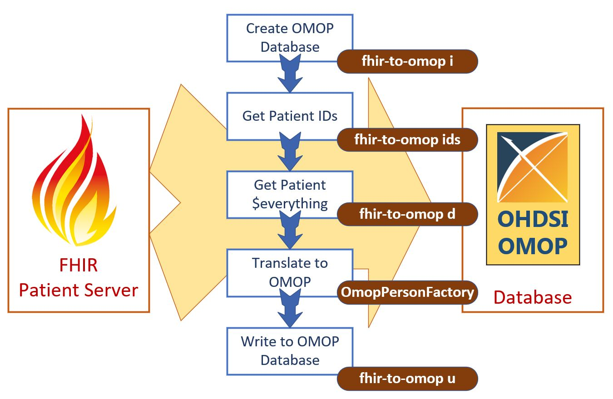

Welcome to the NACHC fhir-to-omop documentation. This is currently a work in progress. Please let us know if you have any questions, issues, or haikus you would like to share with us. The best way to get in touch with us is to open a github issue for this project. We also try to attend the OHDSI Weekly meeting and we try to follow the OHDSI Developers Forum.
The tools presented here use a file based solution to transform FHIR data to OMOP. We download files from our FHIR Patient Server and then use those files to write the data to an OMOP CDM database instance. The tools and utilities used here could also be used to create a complete passthrough appllication that writes FHIR resources from a sever directly to an OMOP database without creating any files as part of the process. The file base solution was selected here as we had a strong motivation to keep the files for testing, working off line, validation, etc.

- Build Your OMOP CDM Database
- Get the IDs of the Patients on Your FHIR Server
- Download Patients from Your FHIR Server
- Upload Your FHIR Patients into Your OMOP CDM Database
- Available as Individual Tools, Comoponents, and API
- All available as a Single Downloadable Standalone Application